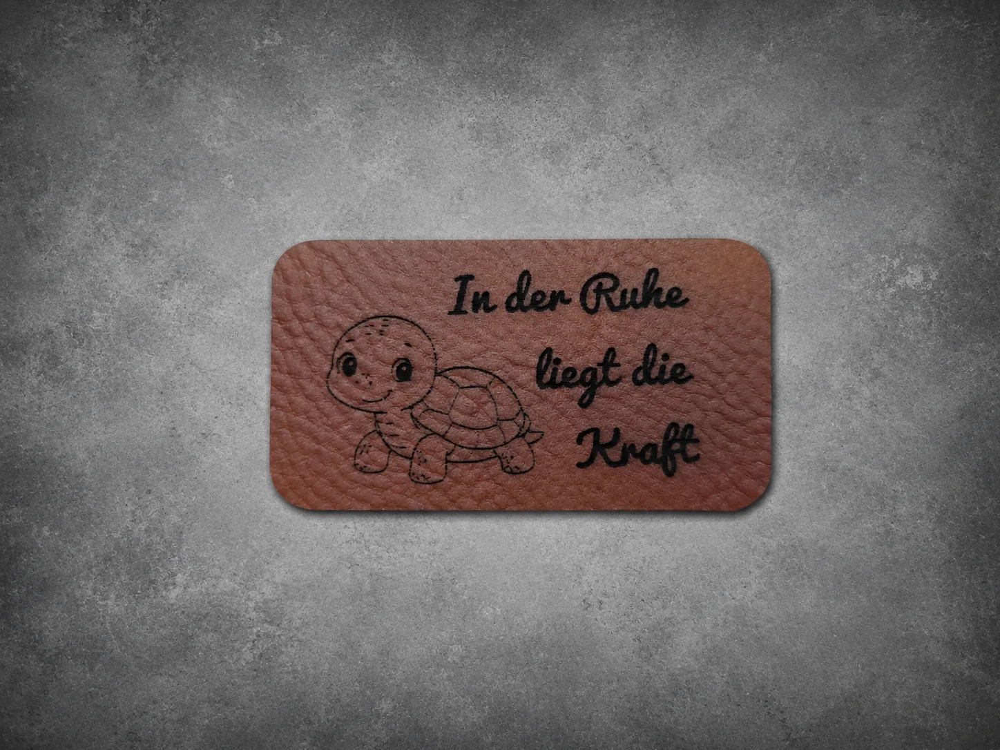
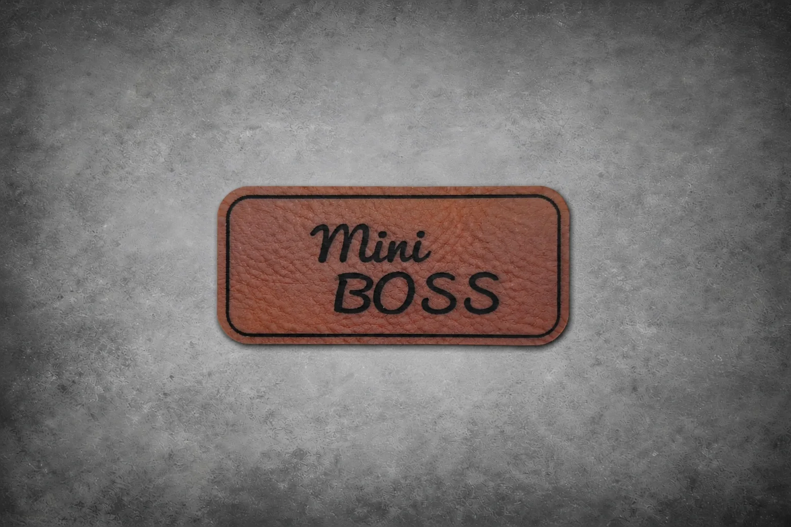
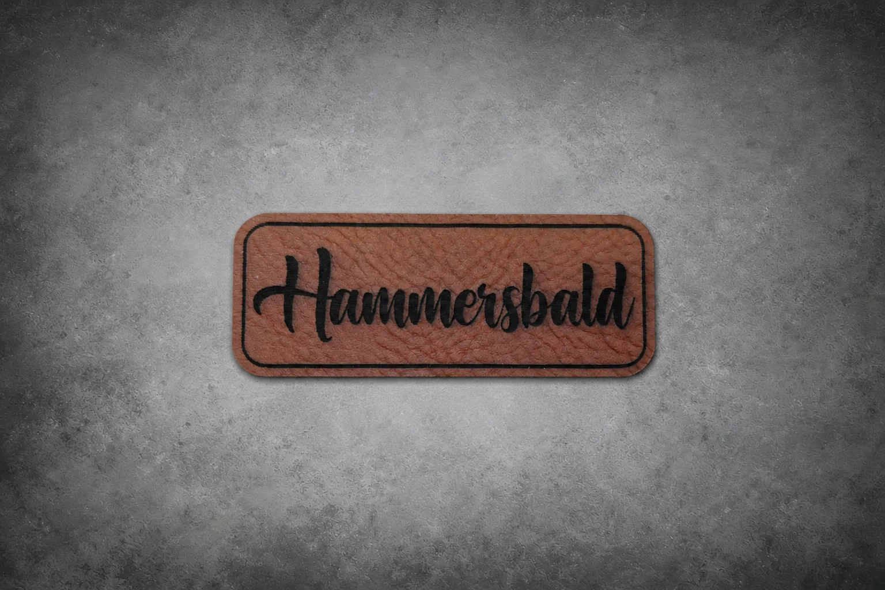
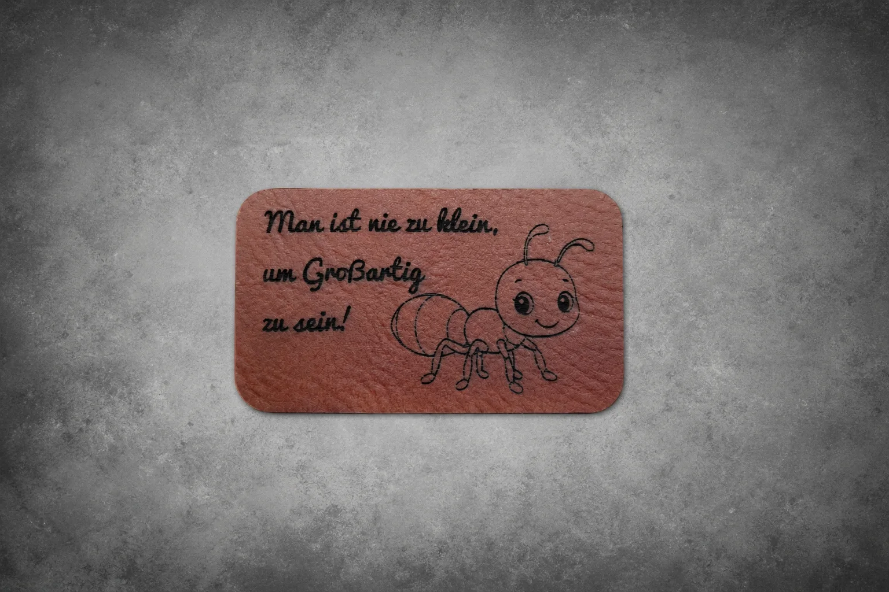
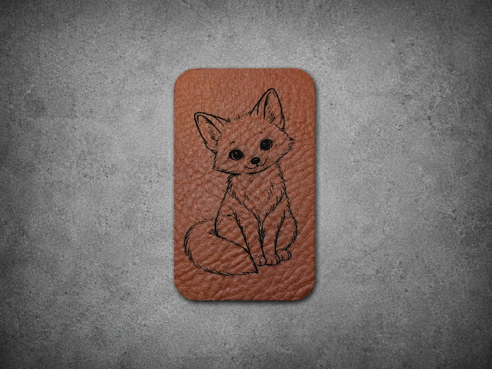

Lederlabel Made with Love – Handmade mit Humor
Dieses humorvolle Lederlabel kombiniert liebevolle Handarbeit mit einem Augenzwinkern und macht deine Kreationen garantiert zum Hingucker.
Individuell gravierte Lederlabels verleihen Handmade-Produkten, Geschenken und kreativen Projekten eine persönliche und hochwertige Note.
Bei Daniels Laser Art fertige ich Lederlabels nach Wunsch. Möglich sind Namen, Logos, Motive, kleine Sprüche, Symbole oder persönliche Botschaften. Jedes Label wird passend zu deinem Projekt abgestimmt und mit viel Liebe zum Detail graviert.
Besonders beliebt sind Lederlabels für Näharbeiten, Taschen, Kleidung, Mützen, Schlüsselanhänger, Handmade-Produkte oder kleine Geschenkideen. Ob für dein eigenes Label, ein kreatives Hobby oder ein besonderes Einzelstück – ein graviertes Lederlabel macht dein Projekt einzigartig.
Du kannst mir deine Idee einfach per WhatsApp oder E-Mail schicken. Ich melde mich persönlich bei dir und bespreche Motiv, Größe, Form, Material und Umsetzung.
Unverbindlich • Individuelle Beratung • Antwort meist innerhalb 24h
Dieses humorvolle Lederlabel kombiniert liebevolle Handarbeit mit einem Augenzwinkern und macht deine Kreationen garantiert zum Hingucker.

Dieses liebevoll gestaltete Lederlabel mit niedlicher Schildkröte erinnert daran, dass in der Ruhe die Kraft liegt – perfekt für handmade Projekte mit Herz.

Das Mini Boss Lederlabel setzt ein selbstbewusstes Statement und verleiht Taschen, Kleidung oder Accessoires einen modernen und verspielten Look.

Mit seinem klaren Design und der stilvollen Schrift sorgt dieses Lederlabel für einen hochwertigen Handmade-Look auf all deinen Lieblingsstücken.

Die süße Ameise steht für Stärke, Fleiß und Mut – ein charmantes Detail für kreative Projekte mit besonderer Bedeutung.

Der kleine Fuchs verleiht deinen Handmade-Unikaten eine warme und liebevolle Note und macht jedes Projekt zu etwas ganz Besonderem.